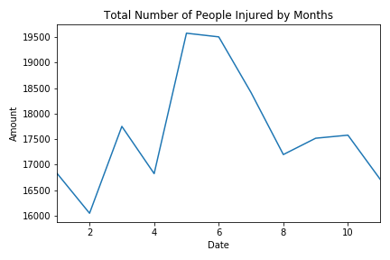
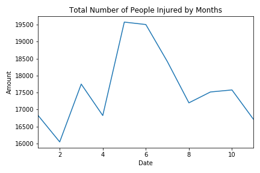
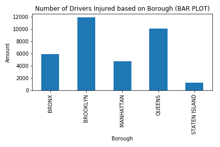
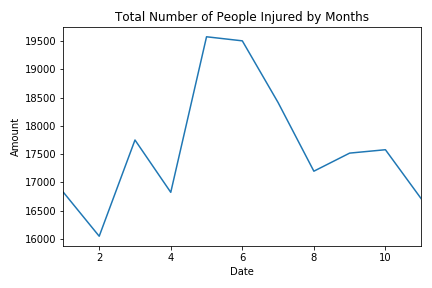

The reason I am intrested in this data is because of how useful it is to New York. It is important to study the trend of collisions that happen in NY so that the general public can be made more aware in order to stay safe, and also so that it may become possible that a means of prevention can be created to make our streets safer for the public.
The data is filtered from January 1st 2019, to November 31st 2019.
We use the describe function in order to check whether we have missing data. These values usually show up as NaN for not availiable. We see that there is some NaN values that show up for some data. This could be because it was not recorded either accidentaly or on purpose. Or the case that
PERSONS refers to those that were involved in the collisions from all parties, so drivers, cyclist,
and pedestrians combined.
An outlier is defined as an observation that lies an abnormal distance from other values in a random sample from a population. The keyword here is abnormal. If we take a look over at the "Separated by Zip Code graph, we see that there are plotted values that look like they're outliers.
However, those points are actually supposed to be included because they represent necessary data for our models. Each point is repsenting a mark where there have been most reported cases within certain zip codes.
This data does not contain outliers, however it is important to note that zip codes contain many streets within them that intertwine between boroughs, so it would be difficult to make the theory that the amount of injury or deaths correspond to
There is missing data in this data set. IF we look at the data head, we see a bunch of NaNs values.
It's important to note that we should not remove these attributes from this dataframe because it is an essential part that describes the data. There are definitely instances where data could and should have been recorded - such as in the BOROUGH column - but the majority of the NaN values are from an abscence of Contributing Factors. There are cases where vehicles collided but not more than just two at a time, so these fields are left blank for these rows.
I now want to determine whether I can make a linear regression model with my dataset. Doing so, I find that perhaps I am not using the proper variables to construct this, as my R-squared is far below the margins I require for it to show a relationship if any. Essentially what I am trying to accomplish here is an attempt to convey how the amount of people injured compares in each borough.
I also attempted to see where Logistic regression could take me.
It appears my decision tree is leaning hard to the right. I assume this is because it is only finding the first index of my X test to condstruct the tree.
My k-neighbors section is trying to compare connections between the 5 nearest points on my dataset. However I was having trouble trying to parse through to get the values. This is likely because of the large amount of Nan values my dataset has.
As an extra, something I was most excited for, I created a folium map of the data, being that it had location values availiable, so it made the most sense to use.
This project is far from done, in the future I aim to build up on it and better the obvious eras it has. Let it be noted that the dataset itself has a share of its problems, so perhaps a new one will be required to conduct more proper research.